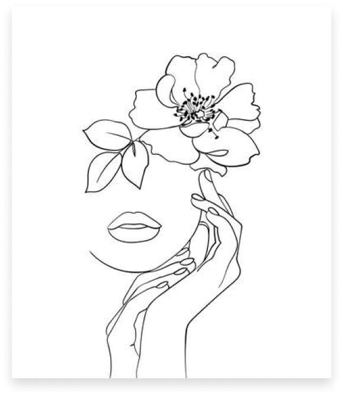
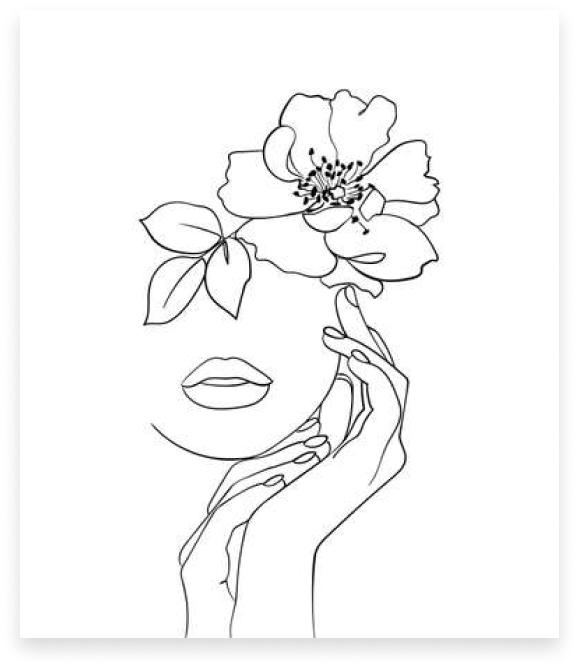

Abstract Art
Abstract art uses visual language of shape, form, color and line to create a composition which may exist with a degree of independence from visual references in the world. Western art had been, from the Renaissance up to the middle of the 19th century, underpinned by the logic of perspective and an attempt to reproduce an illusion of visible reality. By the end of the 19th century many artists felt a need to create a new kind of art which would encompass the fundamental changes taking place in technology, science and philosophy. The sources from which individual artists drew their theoretical arguments were diverse, and reflected the social and intellectual preoccupations in all areas of Western culture at that time.
Abstract art, non-figurative art, non-objective art, and non-representational art, are closely related terms. They are similar, but perhaps not of identical meaning. Abstraction indicates a departure from reality in depiction of imagery in art. This departure from accurate representation can be slight, partial, or complete. Abstraction exists along a continuum. Even art that aims for verisimilitude of the highest degree can be said to be Abstract, at least theoretically, since perfect representation is impossible. Artwork which takes liberties, altering for instance color and form in ways that are conspicuous, can be said to be partially Abstract. Total Abstraction bears no trace of any reference to anything recognizable. In geometric Abstraction, for instance, one is unlikely to find references to naturalistic entities. Figurative art and total Abstraction are almost mutually exclusive. But figurative and representational (or realistic) art often contain partial Abstraction.

History
Much of the art of earlier cultures signs and marks on pottery, textiles, and inscriptions and paintings on rock used simple, geometric and linear forms which might have had a symbolic or decorative purpose. It is at this level of visual meaning that Abstract art communicates. One can enjoy the beauty of Chinese calligraphy or Islamic calligraphy without being able to read it.
Classical antiquity
Patronage from the church diminished and private patronage from the public became more capable of providing a livelihood for artists. Three art movements which contributed to the development of Abstract art were Romanticism, Impressionism and Expressionism. Artistic independence for artists was advanced during the 19th century. An objective interest in what is seen, can be discerned from the paintings of John Constable, J M W Turner, Camille Corot and from them to the Impressionists who continued the plein air painting of the Barbizon school. Early intimations of a new art had been made by James McNeill Whistler who, in his painting Nocturne in Black and Gold: The falling Rocket, (1872), placed greater emphasis on visual sensation than the depiction of objects. Even earlier than that, with her 'spirit' drawings, Georgiana Houghton's choice to work with Abstract shapes correlate with the unnatural nature of her subject, in a time when Abstraction isn't yet a concept .
East Asia
In Chinese painting, Abstraction can be traced to the Tang dynasty painter Wang Mo , who is credited to have invented the splashed-ink painting style. While none of his paintings remain, this style is clearly seen in some Song Dynasty Paintings. The Chan buddhist painter Liang Kai applied the style to figure painting in his "Immortal in splashed ink" in which accurate representation is sacrificed to enhance spontaneity linked to the non-rational mind of the enlightened.A late Song painter named Yu Jian, adept to Tiantai buddhism, created a series of splashed ink landscapes that eventually inspired many Japanese Zen painters. His paintings show heavily misty mountains in which the shapes of the objects are barely visible and extremely simplified. This type of painting was continued by Sesshu Toyo in his later years.
Abstract movie
| No. overall | Title | Directed by | Original release date |
|---|---|---|---|
| 1 | "Olafur Eliasson: The Design of Art" | Jason Zeldes | September 25, 2019 |
| 2 | "Neri Oxman: Bio-Architecture" | Morgan Neville | |
| 3 | "Ruth Carter: Costume Design" | Claudia Woloshin | |
| 4 | "Cas Holman: Design for Play" | Elizabeth Chai Vasarhelyi | |
| 5 | "Ian Spalter: Digital Product Design" | Brian Oakes |
Gallery

 

Refrences
| 1. | "Mark Mothersbaugh to Score 'The LEGO Ninjago Movie'". Film Music Reporter. February 13, 2017. Retrieved February 18, 2017. |
| 2. | Dadich, Scott. "A NEW SERIES ABOUT THE VISIONARY DESIGNERS WHO SHAPE OUR WORLD". WIRED. Retrieved 2017-02-06. |
| 3. | "What's New on Netflix: February 2017". Vulture. Retrieved 2017-02-11. |
| 4. | "Meet the Designers Featured in Netflix's New Series 'Abstract: The art of Design' - Format Magazine". 6 February 2017. |
| 5. | "Netflix launches new documentary series Abstract: The art of Design with a stellar lineup". It's Nice That. 2017-01-19. Retrieved 2017-02-11. |